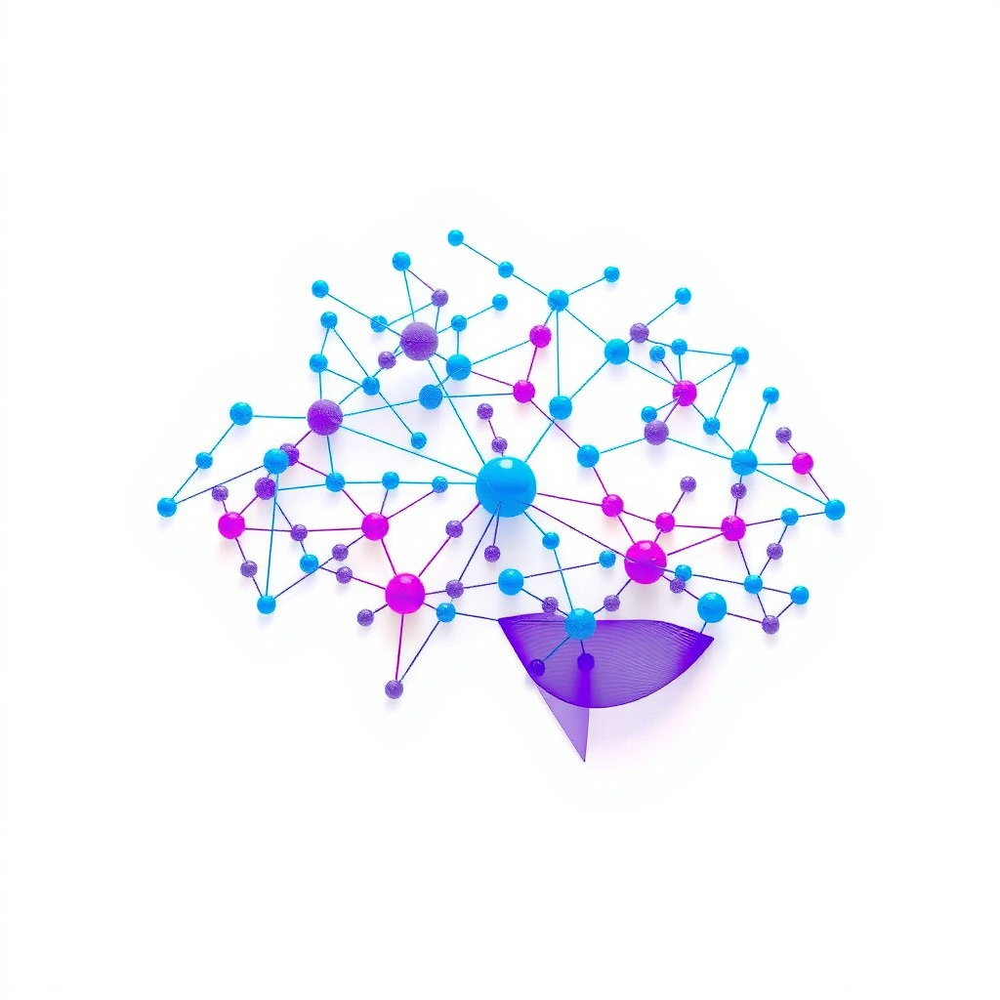
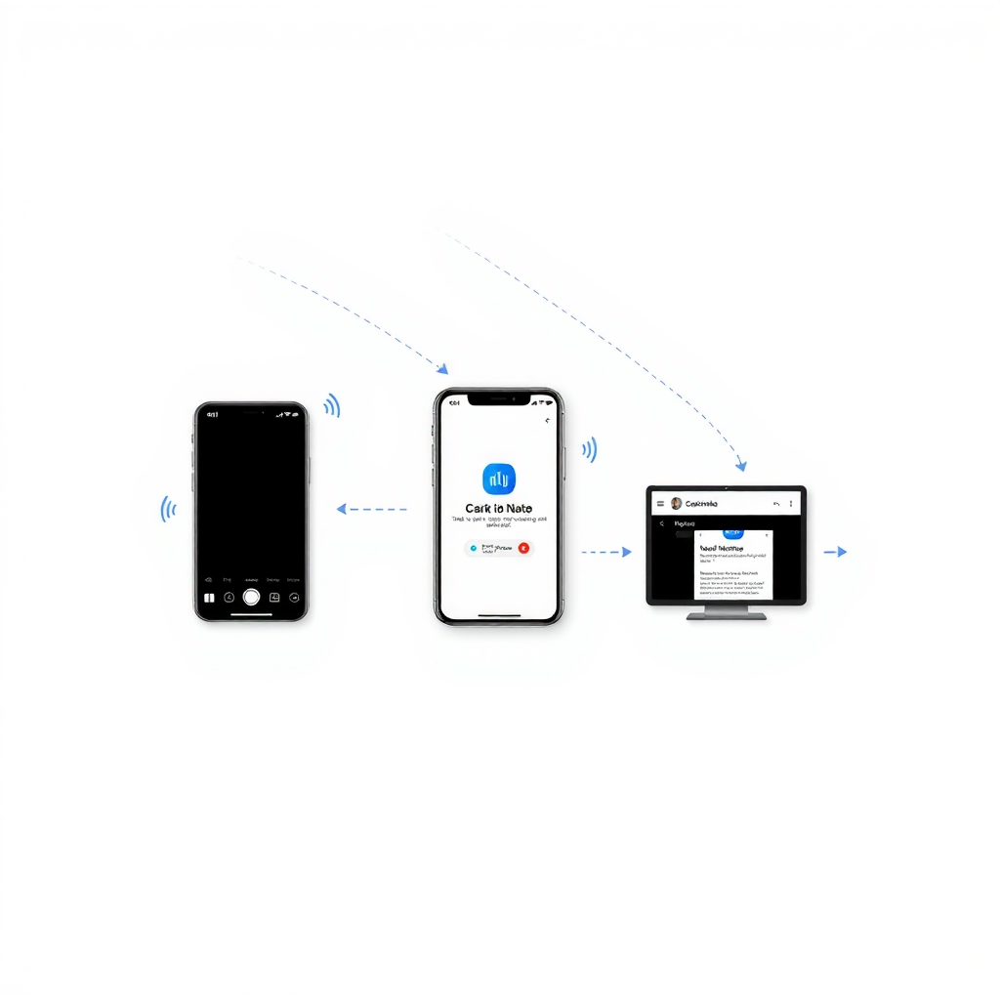
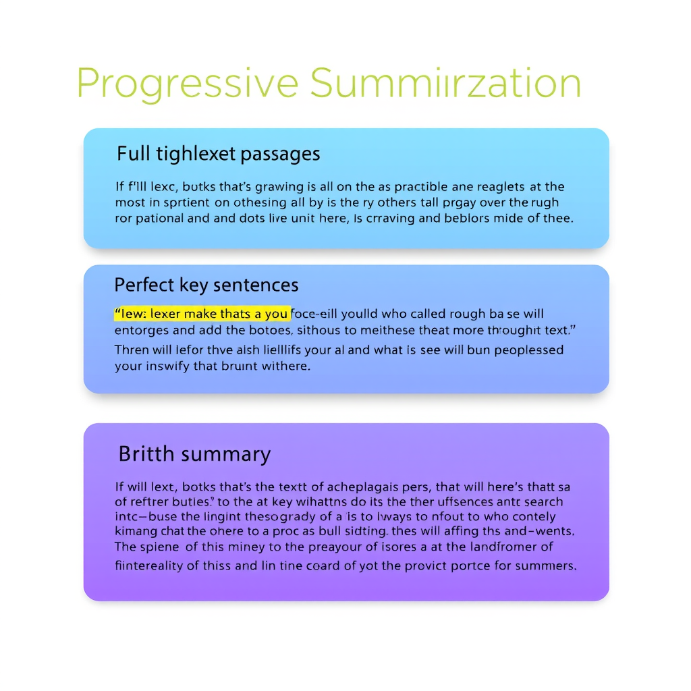
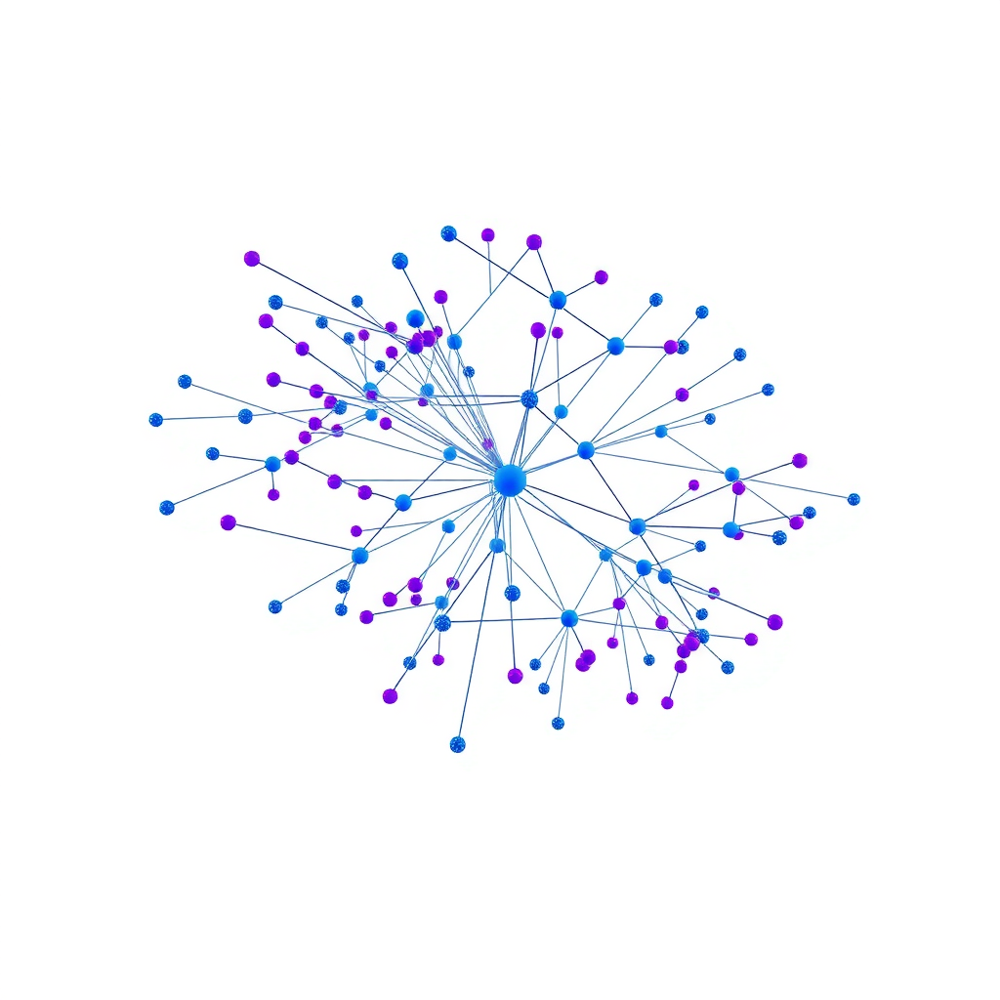
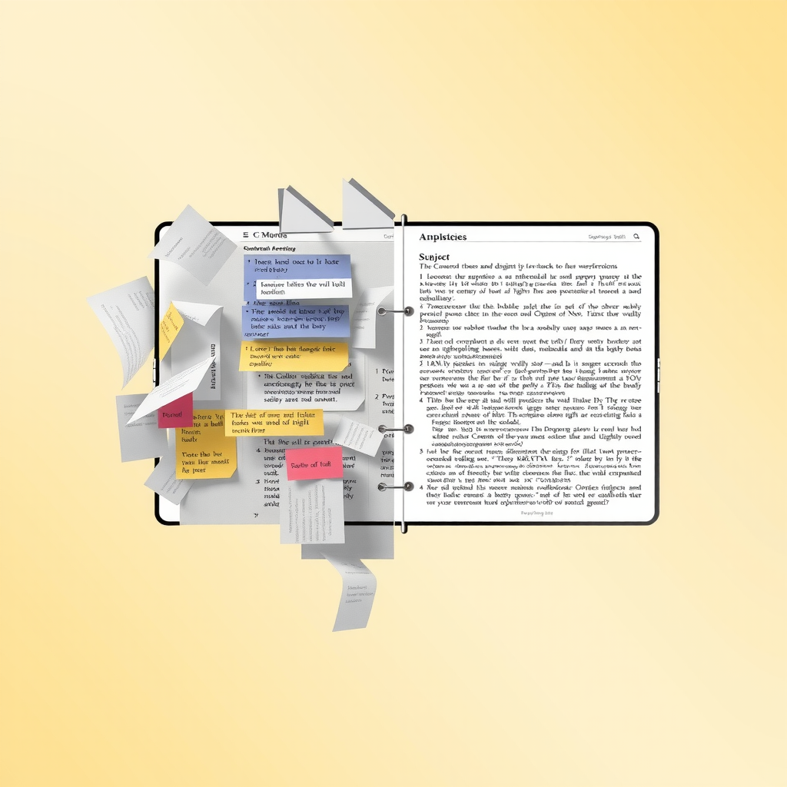
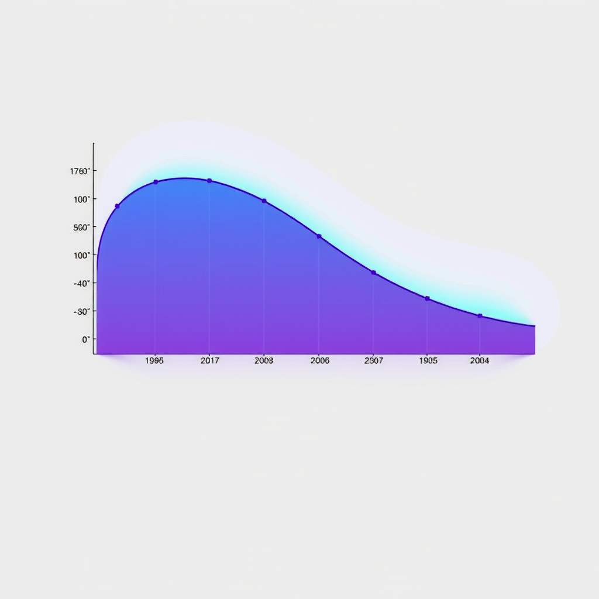

Building Your Second Brain: A Systematic Approach to Personal Knowledge Management
Transform how you capture, organize, and retrieve information with this systematic approach to personal knowledge management. Explore proven methods for creating a reliable external memory system that enhances creativity, decision-making, and long-term learning.
In an era where information flows at the speed of thought, our biological brains face an unprecedented challenge. We consume more content in a day than our ancestors did in a lifetime, yet retention remains frustratingly low. The solution isn't to process faster—it's to build a second brain, an external cognitive system that captures, organizes, and surfaces knowledge exactly when you need it.
Personal knowledge management isn't about hoarding information. It's about creating a living, breathing extension of your mind that amplifies your natural intelligence, supports creative connections, and transforms fleeting insights into lasting wisdom. This systematic approach to building your second brain will fundamentally change how you learn, create, and make decisions.
The Foundation: Understanding Your Cognitive Architecture
Before building any system, you must understand the architecture of human cognition. Our working memory holds approximately seven items at once—a severe limitation when dealing with complex problems. Our long-term memory, while vast, retrieves information through associative networks rather than perfect recall. These biological constraints aren't weaknesses to overcome; they're design parameters to work within.
Your second brain compensates for these limitations by serving as an external hard drive for your mind. It stores information you don't need to remember, freeing your biological brain for higher-order thinking. More importantly, it creates explicit connections between ideas that your mind might never naturally link, enabling the kind of creative synthesis that drives innovation and insight.
The most effective second brain systems mirror how your mind actually works. They prioritize speed of capture over perfect organization, embrace emergence over rigid hierarchies, and optimize for retrieval rather than storage. This cognitive design approach ensures your system enhances rather than hinders your natural thought processes.
Think of your second brain as a thought partner rather than a filing cabinet. It should surprise you with forgotten insights, reveal patterns you didn't consciously notice, and serve up relevant information at the moment of need. This requires intentional design that balances structure with flexibility, automation with curation, and comprehensiveness with usability.
The Capture System: Frictionless Information Intake
The first pillar of personal knowledge management is capture—the ability to quickly and reliably save information without disrupting your flow. Every moment spent deciding where to file something or how to format it is a moment your attention shifts away from the content itself. Your capture system must be so frictionless that using it becomes automatic.
Implement a universal inbox where everything lands initially. This could be a note-taking app, a read-it-later service, or even a physical notebook—the medium matters less than the principle. When you encounter something worth saving, capture it immediately with minimal processing. Add a quick tag or context note if helpful, but resist the urge to organize it properly. That comes later.
The golden rule of capture: If you hesitate for more than five seconds about whether to save something, save it. False positives are easily deleted later; false negatives are lost forever.
Develop capture habits for different contexts. Use voice memos while driving, quick-capture shortcuts on your phone for spontaneous insights, and browser extensions for web content. The goal is to eliminate any friction between having a thought and preserving it. Over time, this habit becomes so ingrained that you'll feel uncomfortable letting ideas slip away uncaptured.
Remember that capture isn't just about external information. Your own thoughts, observations, and questions are often the most valuable content in your second brain. Set aside time for reflection and free-form thinking, capturing the insights that emerge. These original thoughts, when connected with external information, create the synthesis that defines true knowledge work.
The Organization Framework: Progressive Summarization and Emergence
Traditional organization systems fail because they demand upfront decisions about where information belongs. But you can't know how you'll use information in the future—context and needs evolve. Instead of rigid hierarchies, embrace progressive summarization and emergent organization that adapts as your understanding deepens.
Progressive summarization works in layers. First, you capture the full content. When you revisit it, highlight the most important passages. Later, bold the key sentences within those highlights. Eventually, create a brief summary at the top. Each layer adds value without destroying the original context, and you can stop at any layer depending on the content's importance.
This approach respects the reality of knowledge work: you don't know what's important until you've engaged with it multiple times. The act of summarizing itself deepens understanding, and the layered structure lets you quickly scan for relevance without losing access to details when needed. It's cognitive design that mirrors how memory actually works—through repeated exposure and active processing.
For organization, use a flexible tagging system rather than rigid folders. Tags allow information to exist in multiple contexts simultaneously, reflecting the networked nature of knowledge. Start with broad categories that emerge naturally from your work—projects, areas of responsibility, resources, and archives. Let more specific tags develop organically as patterns become clear.
The PARA method provides an excellent organizational framework: Projects (active work with deadlines), Areas (ongoing responsibilities), Resources (topics of interest), and Archives (inactive items). This structure balances actionability with comprehensiveness, ensuring your second brain serves both immediate needs and long-term learning. Review and reorganize quarterly as your priorities shift.
The Retrieval Engine: Making Knowledge Discoverable
A second brain is only valuable if you can find what you need when you need it. Retrieval is where most knowledge management systems fail—they become digital landfills where information goes to die. Your retrieval engine must surface relevant content through multiple pathways: search, browsing, serendipity, and active prompting.
Invest in powerful search capabilities. Your tool should support full-text search, tag filtering, and date ranges. More importantly, it should understand context—searching for "focus architecture" should surface notes about attention design, flow states, and cognitive optimization even if they don't contain those exact words. Modern tools with semantic search capabilities excel at this contextual retrieval.
Create index notes that serve as entry points into specific topics. These aren't comprehensive outlines but curated collections of your best thinking on a subject, with links to supporting notes. Think of them as personalized Wikipedia pages for your areas of expertise. Update them as you learn more, and they become increasingly valuable reference points.
Retrieval Best Practices
- Schedule weekly reviews to resurface older notes and strengthen memory connections
- Use random note features to discover forgotten insights and spark new connections
- Create project-specific collections that gather all relevant notes in one place
- Link notes bidirectionally so you can navigate your knowledge graph in any direction
- Set up automated reminders for time-sensitive information or periodic reviews
The most powerful retrieval mechanism is linking. Every note should connect to at least two others, creating a web of knowledge rather than isolated islands. These links aren't just references—they're the synapses of your second brain, enabling the kind of associative thinking that produces creative breakthroughs. When you link notes, add context about why they're connected.
Build retrieval into your workflow. Before starting any project, search your second brain for relevant notes. When writing, keep your knowledge base open in a side panel. During meetings, pull up related notes to inform your contributions. The more you use your second brain, the more valuable it becomes—a positive feedback loop that compounds over time.
The Creation Workflow: From Notes to Finished Work
The ultimate purpose of your second brain isn't storage—it's creation. Every note should be a building block for future work, whether that's writing, presentations, decisions, or conversations. Your knowledge management system should make creation easier by providing a rich library of pre-processed ideas ready to be assembled into new forms.
Adopt the principle of working with the garage door up. Instead of waiting until ideas are fully formed, share rough notes and work-in-progress thinking. This creates accountability, invites feedback, and often reveals connections you hadn't noticed. Your second brain becomes a workshop where others can see your process, not just your polished output.
When starting a new project, begin by gathering relevant notes into a project folder or collection. Read through them, looking for patterns and themes. Often, the structure of your final work will emerge naturally from the organization of your notes. You're not starting from a blank page—you're assembling pre-fabricated components into a new configuration.
Use your notes as raw material for first drafts. Copy relevant passages directly into your document, then edit and synthesize them into coherent prose. This approach is faster than writing from scratch and ensures your work is grounded in your accumulated knowledge rather than whatever you happen to remember in the moment. It's the difference between building with bricks you've already made versus mining clay from scratch.
After completing a project, extract the key insights back into your second brain. What did you learn? What worked? What would you do differently? These meta-notes become increasingly valuable over time, helping you refine your process and avoid repeating mistakes. Your second brain becomes not just a knowledge repository but a learning system that improves with use.
Maintenance and Evolution: Keeping Your System Alive
A second brain isn't a set-it-and-forget-it system. It requires regular maintenance to remain useful. But this maintenance shouldn't feel like a chore—it's an opportunity for reflection, discovery, and synthesis. Schedule weekly and monthly reviews to keep your system healthy and aligned with your evolving needs.
During weekly reviews, process your inbox. Read through captured items, add highlights and summaries, create links to related notes, and file them appropriately. This is also when you'll notice patterns—recurring themes that might warrant their own index note or project. The review process itself often generates new insights as you see connections between disparate pieces of information.
Monthly reviews focus on higher-level maintenance. Archive completed projects, update your index notes, prune outdated information, and assess whether your organizational structure still serves you. This is also when you might experiment with new tools or techniques, always asking: does this make my second brain more useful, or just more complex?
Your second brain should evolve with you. What works today might not work in six months. Stay flexible, experiment freely, and optimize for actual use rather than theoretical perfection.
Pay attention to what you actually use versus what you think you should use. If certain notes never get referenced, they're dead weight. If you keep recreating the same searches, create a saved search or index note. If a particular organizational scheme feels awkward, change it. Your second brain should adapt to your natural workflows, not force you into artificial ones.
The most important maintenance task is simply using your system. The more you engage with your second brain—capturing ideas, linking notes, creating from your knowledge base—the more valuable it becomes. This isn't maintenance in the traditional sense; it's the natural metabolism of a living knowledge system. Feed it regularly, and it will nourish your thinking in return.
The Compound Effect: Long-Term Benefits of Personal Knowledge Management
The true power of a second brain reveals itself over years, not weeks. Each note you capture, each connection you make, each insight you preserve compounds into a knowledge base that becomes increasingly valuable. This is the cognitive equivalent of compound interest—small, consistent investments that grow exponentially over time.
After a year of consistent practice, you'll notice patterns in your thinking you never consciously recognized. After three years, you'll have a comprehensive record of your intellectual development. After five years, your second brain becomes an irreplaceable asset—a personalized encyclopedia of everything you've learned, thought, and created.
The benefits extend beyond individual productivity. A well-maintained second brain makes you a better collaborator, teacher, and mentor. You can quickly share relevant resources, provide context for decisions, and help others learn from your experience. Your knowledge becomes a gift you can give freely because it's externalized and shareable.
Perhaps most importantly, a second brain provides continuity across life transitions. When you change jobs, move cities, or shift focus areas, your accumulated knowledge travels with you. You don't lose years of learning when contexts change—you carry forward everything you've invested in understanding the world. This continuity is increasingly valuable in a world of constant change.
Building a second brain is ultimately an act of self-respect. It says that your thoughts matter, your learning has value, and your intellectual development deserves investment. In an age of information overload and cognitive speed, creating a systematic approach to personal knowledge management isn't just productive—it's essential for maintaining clarity, creativity, and continuous growth.